Adjustments are the flat filters: every one of them reads a pixel and writes a pixel back in the same place, no pushing, no blurring. That covers tone (Levels, Curve, Auto Levels, Clamp, Contrast, Histogram), color (HSL, Grayscale, Gradient Map, Color Swap, Color To Mask, Color Match), and the group that throws information away on purpose (Threshold, Quantize, Dither, Channel Mixer, Invert, Highpass).
Most of these sit late in a graph, right before an Output, tightening what a Noise or a Pattern generated into something with real pixel-art contrast. A lot of them take an optional Mask input too: wire one in and the effect only lands where the mask is bright, with an Invert mask checkbox to flip that reading. I reach for Levels and Quantize the most; the rest earn their slot once you need to match a reference palette or fix a specific color.
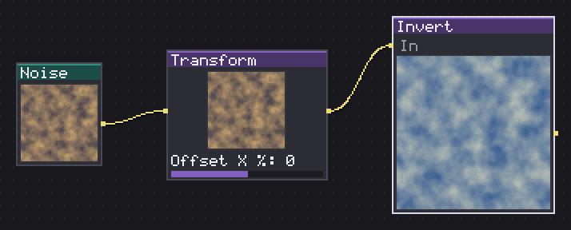
Flips every color channel: what was white turns black.
Flips red, green and blue; alpha is left alone. There is nothing to configure, which is the point: it is a one-click negative you drop in to sanity-check a mask (does the bright side match what I expect) or to turn a "distance from edge" map into a "distance from center" one without touching Levels.
Plug it straight after a Threshold or a Distance node when the black/white sides came out backwards, instead of hunting for an Invert checkbox on the upstream node (not every node has one). Wire a Mask into it and only the masked area gets negated, which is a quick way to invert one color region of a sprite while leaving the rest alone.
In: In (image) · Out: image
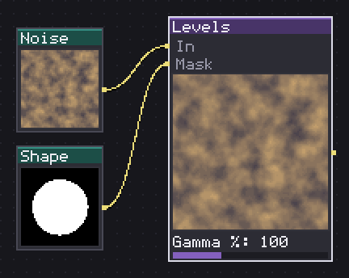
Remaps the tonal range by black point, white point and gamma.
The classic three-point remap: In black and In white set where the input curve starts and ends, Gamma % bends the middle of that range. Above 100 lifts the midtones, below 100 sinks them; 100 is the identity. Out black and Out white then remap the 0..1 result onto a narrower (or inverted, if you set out white below out black) output range, which is how you turn a Quantize's flat {0, 128, 255} into a three-tone {80, 128, 176} ramp without a separate Multiply and Add.
I set In black to 20 and In white to 235 on most rendered noise before it goes anywhere else: it is a cheap contrast punch that costs nothing at pixel scale. Invert mask flips which side of a wired Mask gets the adjustment.
In: In (image), Mask (image) · Out: image
Parameters
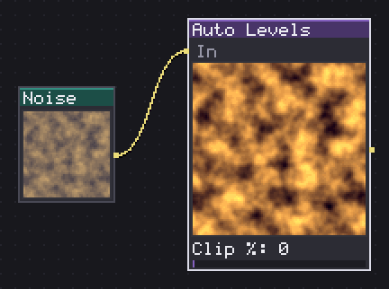
Stretches the histogram from black to white, clipping a percentage at each end.
Finds whatever range of luminance (or, with Per channel on, each channel separately) the input actually uses, ignoring near-transparent pixels, and stretches it to the full 0..255. Clip % throws away that percentage off each end first, so a couple of outlier pixels cannot stop the rest of the image from stretching.
Useful as the first node after a generator whose output range you do not want to guess by hand: a Reaction Diffusion or a stacked Noise often comes out sitting in the middle third of the tonal range, and one Auto Levels at Clip % 0 gives you full contrast back. Per channel on fixes a color cast (a Noise that reads slightly warm) instead of only normalizing brightness. On a flat input with no range to stretch, the node quietly does nothing rather than dividing by zero.
In: In (image) · Out: image
Parameters
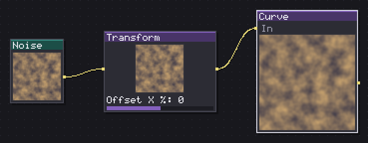
Remaps tones with a point graph you draw yourself.
A freeform tonal remap: you draw the curve directly on the node instead of typing in five numbers, and it applies the same result to red, green and blue. There is nothing to set in the parameter list because the shape of the curve is the whole parameter.
Reach for this over Levels when the fix is not a straight gamma bend, an S-curve for extra punch in the midtones with the black and white points held, or a deliberate crush at one end. I use it after Gradient Map more than before it: gradmap already assigns the colors, Curve then adjusts how much of the image sits in the bright versus dark stops of that ramp. Because it works on luminance per channel and not on hue, a strong curve can shift color balance as a side effect, which is sometimes the point and sometimes not.
In: In (image) · Out: image
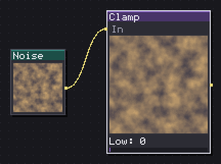
Clips whatever falls below one limit and whatever rises above another.
Crushes anything below Low up to Low and anything above High down to High, on each of red, green and blue; alpha is untouched. If you set High below Low they swap, so there is no way to get a broken range.
It reads like a blunt version of Levels, and that is exactly the job: I use it to guarantee a flat floor or ceiling after a Contrast push has crushed blacks further than intended, or to keep a height map from a Curvature node inside a safe band before an Emboss. Unlike Levels there is no remap of the surviving range, values inside [Low, High] pass through unchanged, only the extremes get pinned.
In: In (image) · Out: image
Parameters
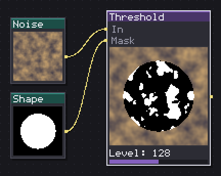
Splits the image into black and white at a luminance level.
Splits the image into pure black and pure white at Level, judged on luminance; Invert swaps which side comes out white. Color is discarded entirely, both sides land on 0 or 255 for red, green and blue.
This is the node that turns a soft generator output into a hard silhouette: Quantize still leaves you three or four tones, Threshold leaves you one edge. I put it right before a Bevel or a Distance node whenever the upstream shape is a gradient rather than flat color. Invert mask works on the node's own Mask input as usual, letting the rest of the image through unaffected where the mask says so, rather than affecting which side of Level counts as on.
In: In (image), Mask (image) · Out: image
Parameters
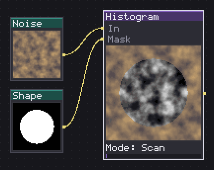
Narrows, stretches or shifts a luminance band; a mask lets the input through.
Four Modes built on one 256-entry lookup of luminance. Scan is a soft threshold whose edge narrows as Contrast climbs toward 100 (a hard cut at the far end). Select keeps a band of width Range around Position and drops everything else, with Softness turning the cutoff into a smoothstep fade instead of a hard edge. Range stretches that same band out to fill the full 0..1 tone. Shift rotates every tone by Position, wrapping at the top, which is closer to a palette cycle than a selection.
Wherever a Mask is not wired, this answers an opaque grey everywhere, which is the honest way to say "no input to fall back on" rather than doing nothing. I use Select on a Noise to carve out one thin band of value as a scatter mask, tightening Range until only isolated speckles remain.
In: In (image), Mask (image) · Out: image
Parameters
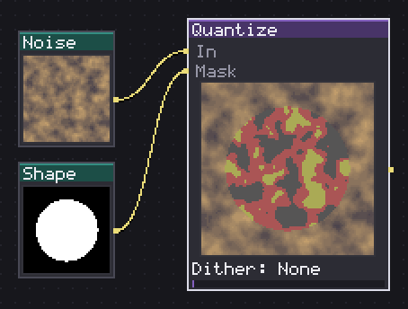
Reduces tones to N steps, with Bayer or blue noise dithering.
Reduces tones to Steps flat levels (2 to 16) and, with Dither, breaks up the resulting bands with an ordered pattern: Bayer 2x2 and 4x4 for a visible grid, Blue Noise for a texture with no repeating structure. None is a plain posterize.
Four steps with Bayer 4x4 is my starting point for a retro dithered ramp on a light source. Dithering always leaves a scatter of single stray pixels at the boundary between bands: follow this with a Cluster node (Mode Islands, small Min size) to melt those strays into their neighbours if the result should read as flat color regions rather than a dither pattern. Invert mask applies to the node's own Mask input.
In: In (image), Mask (image) · Out: image
Parameters
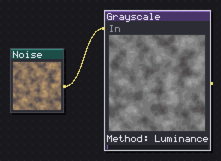
Converts to gray by luminance, average, lightness, maximum or minimum.
Five ways to flatten color, and the difference matters more than it looks. Luminance (the default) weighs green highest and reads closest to how brightness looks to the eye. Average treats all three channels equally, which is flatter and sometimes truer to a stylized palette. Lightness takes the midpoint between the brightest and darkest channel. Max and Min keep only the highest or lowest channel value, which posterizes hard and is useful for pulling out one color's mask-like presence rather than a natural grey.
I default to Luminance unless a specific channel is doing something odd, then switch to Max or Min to see which channel is causing it.
In: In (image) · Out: image
Parameters
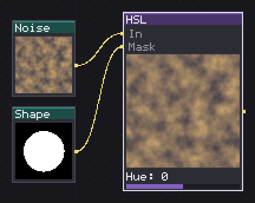
Shifts the hue, saturation and lightness of everything coming in.
Shifts Hue (-180 to 180), Saturation and Lightness (-100 to 100 each) by adding the offset to whatever the pixel already has, not by setting an absolute value. Zero on all three is the identity.
Because it adds rather than replaces, this node keeps whatever shading and hue variation the input already had; a gradient painted sprite stays a gradient, rotated around the color wheel or pushed lighter. That is the main difference from Color Swap, which replaces one specific color rather than shifting all of them together. Wire a Mask in to recolor one region of a sprite (an eye color, a gem) without touching the rest; Invert mask flips which side of that mask gets the shift.
In: In (image), Mask (image) · Out: image
Parameters
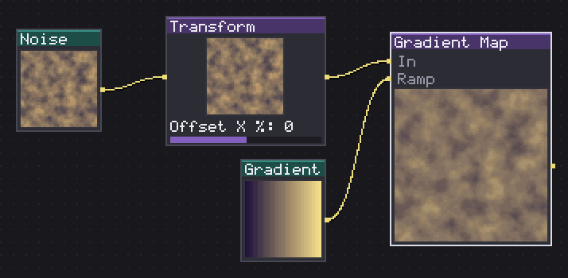
Swaps each tone for the color it lands on in a ramp.
Swaps each tone for the color it lands on along a ramp. Wire an image into the Ramp input and it reads that image's middle row as the gradient, palette or plain color strip alike, so any node that produces a strip of color can drive this one.
This is the node I reach for once a shape or a height field is finished and needs its final colors: a Bevel's height output straight into Gradient Map's In, a hand-picked ramp into Ramp, done. Because the ramp comes from an actual image rather than two fixed colors, swapping which Ramp is wired in is the fastest way to reskin the same shape into a different material. Feed it a one-pixel-tall strip if you want an exact, non-interpolated set of stops rather than a smooth gradient.
In: In (image), Ramp (image) · Out: image
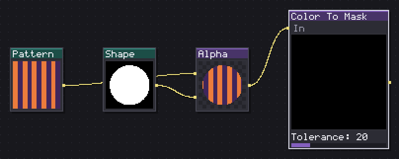
Turns one specific color into a white mask, with tolerance and softening.
Turns everything close to Color into white and everything else black, forming a plain grayscale mask. Tolerance sets how far a pixel can drift from that exact color and still count; Softness turns the cutoff into a smooth fade instead of a hard edge. Invert swaps which side comes out white.
This is the node to reach for when you need a Mask input somewhere else but only have a flat-colored sprite to build it from: pick the color you want isolated, tolerance 0 for an exact palette match, higher for a range of shades of the same color. I usually push Softness up a little even at tolerance 0, since a hard mask edge at pixel scale can look more aliased than the source art did.
In: In (image) · Out: image
Parameters
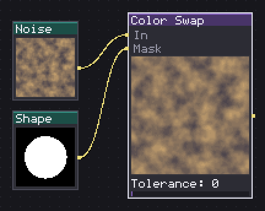
Swaps one color for another, flat or by shifting its hue and saturation.
Repaints whatever matches From with To, and Mode decides how much of the original shading survives. Flat replaces the matched pixel outright, losing any gradient it had. Shift adds the From-to-To difference in hue, saturation and lightness instead, so a sprite shaded from dark red to bright red keeps that same shading after becoming blue (this is the node's answer to Substance's Replace Color). Hue+Sat takes To's hue and saturation but keeps the pixel's own lightness, which is the one to use when the source art already has good value contrast and only the color itself needs to change.
Tolerance and Softness work exactly like Color To Mask; Amount blends the whole effect in from 0 to 100 if a full swap is too strong.
In: In (image), Mask (image) · Out: image
Parameters
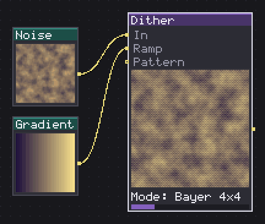
Fakes intermediate tones with Bayer screens, blue noise or diffusion.
Fakes intermediate tones between flat steps. With nothing wired into Ramp, it posterizes to Steps levels the same way Quantize does, textured by Mode: Bayer 2x2/4x4/8x8 for a visible ordered grid at increasing fineness, Blue Noise for scatter with no repeating pattern, Pattern to read the threshold from a wired image instead, Diffuse for Floyd-Steinberg error diffusion (Serpentine alternates row direction so the errors do not drift into diagonal streaks).
Wire something into Ramp and the behavior changes: instead of stepping brightness, each pixel snaps to the nearest color of that ramp or palette, nudged by the same dither pattern before the snap. That is how you get a proper dithered transition between two specific palette colors rather than between black and white. Amount scales how strongly the pattern nudges the result, useful for a lighter dither than the full-strength default.
In: In (image), Ramp (image), Pattern (image) · Out: image
Parameters
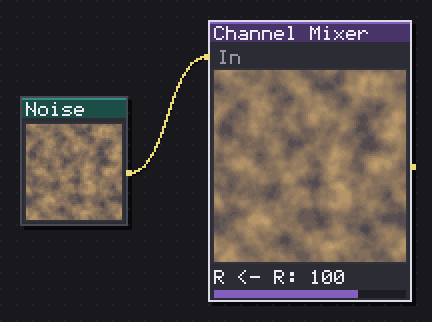
Rebuilds each output channel as a mix of the three input ones.
Rebuilds red, green and blue as a weighted sum of all three input channels, each weight running -200 to 200 with the defaults set to the identity matrix (R <- R 100, everything else 0). Pushing a channel's own weight negative inverts only that channel; raising a cross term like R <- G bleeds green into the red output.
I use it for two things: swapping channels outright (set R <- G to 100 and R <- R to 0 to move green into red) when a normal map or a packed mask came out with channels in the wrong slot, and subtracting one channel from another (a negative cross weight) to isolate detail that only shows up as a difference between two channels.
In: In (image) · Out: image
Parameters
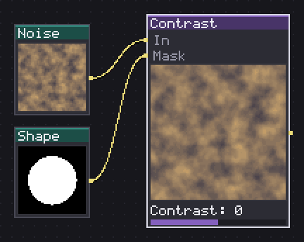
Spreads or gathers tones around the midpoint, and raises or lowers brightness.
Contrast scales every value around the middle grey point, from flat (-100, everything collapses to grey) through identity (0) up to four times steeper (100); Luminosity then shifts the whole result brighter or darker. Both run -100 to 100.
This is a blunter, faster tool than Levels for the common case of needing more punch and nothing else: one slider instead of five. I push Contrast to 40-60 on most flat generator output before it reaches a Threshold, since a soft edge threshold much better once the tones on either side are already pulled apart. Past about 80 the effect gets aggressive quickly, since the scale keeps climbing to 4x at the top of the range. Invert mask applies to the node's own Mask input.
In: In (image), Mask (image) · Out: image
Parameters
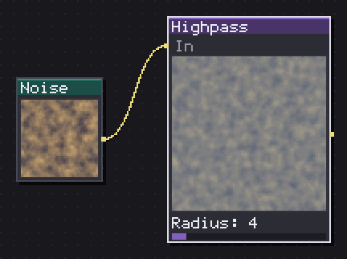
Keeps the fine detail by subtracting a blurred version of itself.
Subtracts a blurred copy of the input from itself, so only the fine detail (edges, texture, noise finer than Radius) survives, centered on mid grey. Grayscale collapses the result to a single channel instead of keeping it in color, which is what a height field or a bump-adjacent input usually wants.
I use this to pull texture detail out of a Noise before feeding it to a Sharpen elsewhere in the graph, or as a quick way to see how much fine grain a generator is actually contributing once the broad shape is subtracted away. Larger Radius keeps coarser detail in the result along with the fine grain; smaller keeps only the sharpest edges.
In: In (image) · Out: image
Parameters
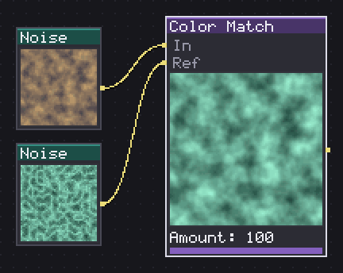
Matches the mean and deviation of each channel to those of the reference.
Matches the input's color statistics, mean and spread per channel, to a wired Ref image, then blends that matched result back in by Amount. At Amount 100 the input takes on Ref's overall tone and contrast; lower values ease off toward the unmatched original.
This is the node for making two textures that were generated separately (a wall and a floor, say) read as the same lighting and material family without manually eyeballing Levels on each one: wire the piece you want to match into In, the one you are matching against into Ref. It matches statistics, not specific colors, so it will not turn a green wall red, it will make a slightly-too-bright green wall sit at the same brightness and contrast as its reference.
In: In (image), Ref (image) · Out: image
Parameters